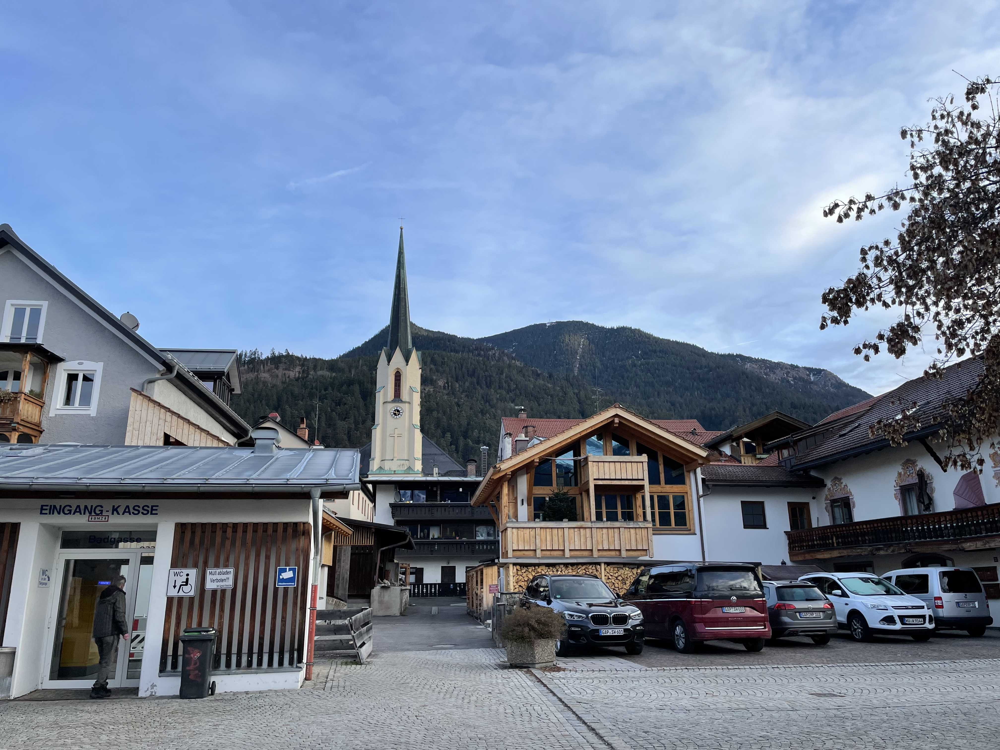

Europe 25/12/2022 - 07/01/2023
25/12/2022 aka Christmas
Arrived groggily in Amsterdam, captivated by Earth-tones on this rainy afternoon.


Stopped for food at "De Brabantse Aap" where we ate a bunch of fried things and got some drinks.
Walked though beautiful crowded streets stunned at the old beautiful cityscape.
Stopped at a library bar to play checkers before heading to our hotel.
Tried to stay up as late as we could, but woke up in the middle of the night.
Watched some German Christmas movie and ate salad and snacks in bed at 3am.
We couldn't believe how many languages were on the tv!


26/12/2022
Barely-awake we stopped for waffles, eggs, toast & coffee on our way to FreeDam Walking Tour.
Tours early on always give us valuable context and history.
The Dutch enjoy a high quality of life and are tolerant of most things that don't hurt anyone.
They're pragmatic and business savvy.
The Netherlands fell to the Nazis in 5 days during WW2, so little fighting took place there - especially in Amsterdam which preserved the architecture.


Took a train to the Van Gogh museum after a lovely lunch at Calf & Bloom cafe.
La Dilletente natural wine bar for dinner & drinks - cute jazzy atmosphere with a three course tasting menu.
Nichole almost got ran over by a moped when taking a picture as we walked back to our hotel.
Late night doner kebabs and stroopwaffles.


27/12/2022
'The Lobby' for a classy breakfast.
Then to The Groote Museum (of big ideas) - they asked questions like "how are we connected to the World around us?",
"How are we similar to plants, ants, and other animals?",
"Is it okay to hurt AI?",
"Where do we fit in the World and Universe?" Nepalese food from this tiny busy restaurant 'Bhatti Pasal'.
Night canal boat tour to see the Amsterdam Light Festival.
Late night doner kebabs and watching skiing on tv.


28/12/2022
Up early for a quick flight to Munich.
Got lost on the bus trying to get to Dachau - this old German man got off the bus with us to make sure we got on the right bus, he didn't speak a word of English.
Made it to Dachau. Dazed by the information and history, really wish we had booked a tour guide for this.
Mostly walked around and took it all in. There are only two housing buildings left, which you can go in.
The rest of the foundations stand to give a sense of the scale. Walked through the "showers" and saw the incinerators.
Processed everything on the train ride to Garmish-Parkenkirchen. Diner at the hotel, quick sauna after.


29/12/2022
Ate bavarian pretzel with butter and headed up the Mountain.
Took the cogwheel train and cable car up to the summit of the Zugspitze, enjoyed the view from the highest peak in Germany.
Took a longer cable car down to Lake Eibsee. Grabbed lunch at a lakeside restaurant.
Robert went to bed early feeling sick. Nichole wandered around LudwigstraBe (the historic road) and stumbled onto a concert.


30/12/2022
Robert is sick and stayed in bed all day.
Nichole hiked around Lake Eibsee and stopped for bratwurst and gluhwine lakeside.
Stopped in Grainau to see the church and interested graveyard out front. Doner kebabs for dinner.


